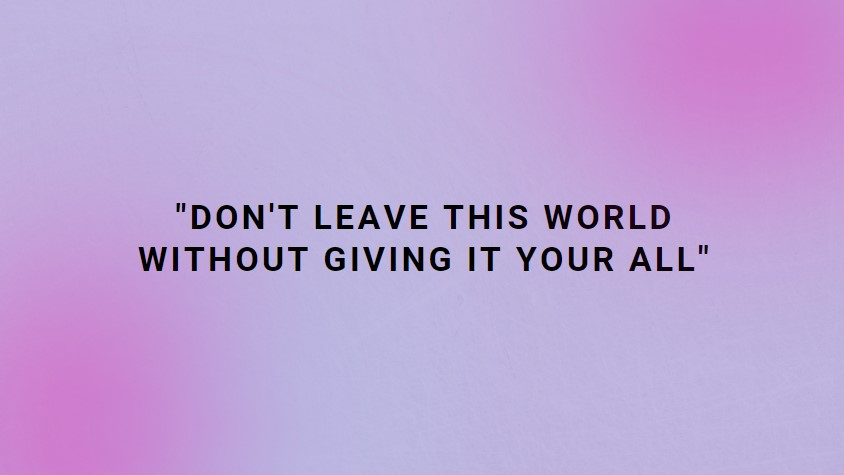
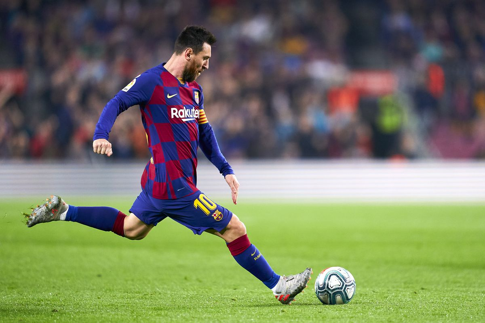

SOLIDUM
ISAIAH
KYLE
HAMPTON
______________________________________________
Ensuring a satisfactory result in every project
I am a person who likes to give my very best in everything that I do, especially work related things. I just want to be the best out here in the web designing industry. Believe me and you will see.
______________________________________________
SERVICES
- I would passionately plan and design for your website. Whatever it is, I can do it. Interactive websites? You got it. Name it, and I'll do it.
- I offer top of the line website designs. Designs that will make a person say "woah". Creating sleek and professional looking websites is embedded in my DNA.
MY PERSONAL INTERESTS


On my free time, I tend to play or watch football. I find this sport extremely fun and exciting. My favorite team is FC Barcelona, and my favorite player is Lionel Messi. I also play mobile or pc games. I enjoy it a lot, especially playing it with friends. On my alone time, I like to surround myself with music. My favorites genres are 50s, 70s, 80s, 90s, and I also like some of the music from today.